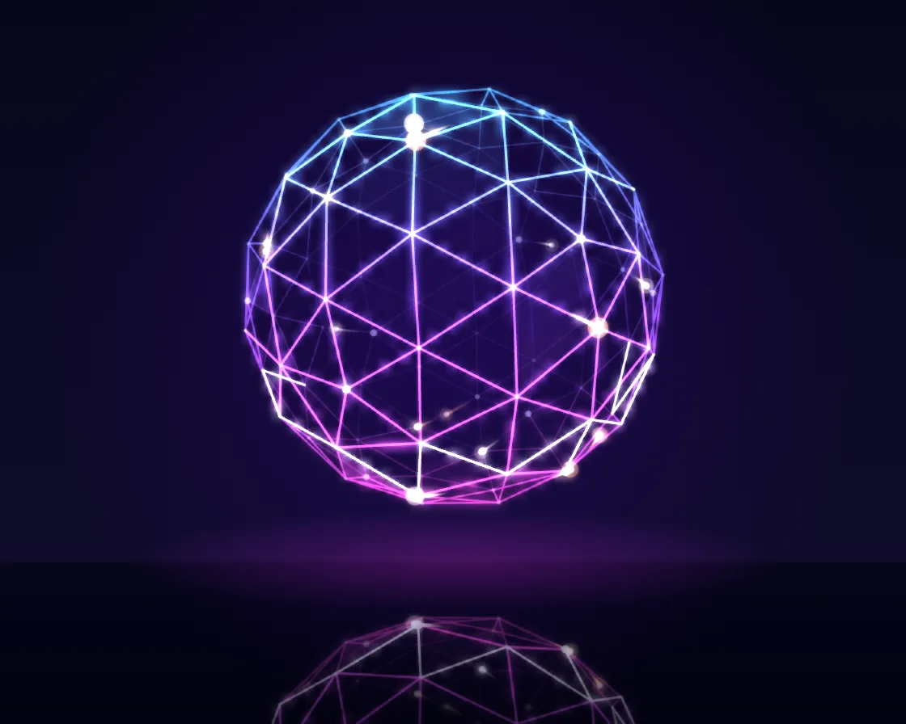

Neon geodesic sphere
Neon geodesic sphere is a Canvas effect: icosphere wireframe stroked as neon, glow from cheap downscaled copies. One plain JavaScript file with no dependencies; add it with npx motion-library add neon-geodesic.

Open it live, tune it and copy the code
What is Neon geodesic sphere?
A neon geodesic sphere turns over a glossy floor while pulses walk its struts.
How does Neon geodesic sphere work?
A subdivided icosahedron with struts in four depth bands; the glow is the same drawing shrunk to a quarter and a twelfth and scaled back up.
How do I add Neon geodesic sphere to my website?
- In your project folder, run
npx motion-library add neon-geodesic. It writesanimations/neon-geodesic.js. Needs Node 18 or newer. - Import it and call it with a container element that has a size:
import fx from './animations/neon-geodesic.js'; const stop = fx(document.querySelector('#hero')); - Call
stop()to clean up, for example when a component unmounts.
Every setting below is also a flag, so you can install it already tuned: npx motion-library add neon-geodesic --pulses 40.
What settings can I tweak?
| Setting | Flag | Default | Range | Step |
|---|---|---|---|---|
| Pulses | --pulses | 14 | 0 to 40 | 1 |
| Spin | --spin | 1 | 0 to 3 | 0.05 |
| Glow | --glow | 1 | 0 to 2 | 0.05 |
Specifications
- Renderer
- Canvas 2D
- Category
- Chrome & 3D
- Dependencies
- None
- File size
- 11.4 KB, unminified
- Interactive
- No: it plays on its own
- Reduced motion
- Plays the same for everyone
- Licence
- MIT-0: use it anywhere, no credit needed
Source code
// Neon geodesic: an icosahedron with every face split into nine (frequency 3), pushed out onto a sphere:
// 92 nodes, 270 struts. Each strut is stroked as neon tube light; the glow is the same drawing shrunk and
// blown back up (a cheap bloom). Pulses run along the struts, preferring to go straight, and light the
// panels they pass. A bright ring sweeps pole to pole. The far side is dimmer, and a glossy floor mirrors it.
const PARAMS = { pulses: 14, spin: 1, glow: 1 };
export default function (stage) {
const canvas = document.createElement('canvas');
canvas.style.cssText = 'position:absolute;inset:0;width:100%;height:100%;display:block';
stage.append(canvas);
const ctx = canvas.getContext('2d');
const mk = () => { const c = document.createElement('canvas'); return [c, c.getContext('2d')]; };
const [neon, nx] = mk(), [sm1, s1x] = mk(), [sm2, s2x] = mk(), [refl, rx] = mk();
let W = 0, H = 0, D = 1;
const resize = () => {
D = Math.min(devicePixelRatio, 2); W = stage.clientWidth || 1; H = stage.clientHeight || 1;
canvas.width = neon.width = refl.width = W * D | 0; canvas.height = neon.height = refl.height = H * D | 0;
sm1.width = Math.max(1, W * D / 4 | 0); sm1.height = Math.max(1, H * D / 4 | 0); sm2.width = Math.max(1, W * D / 12 | 0); sm2.height = Math.max(1, H * D / 12 | 0);
};
const ro = new ResizeObserver(resize); ro.observe(stage); resize();
// ── geometry: frequency-3 icosphere
const g = (1 + Math.sqrt(5)) / 2;
const ico = [[-1, g, 0], [1, g, 0], [-1, -g, 0], [1, -g, 0], [0, -1, g], [0, 1, g], [0, -1, -g], [0, 1, -g], [g, 0, -1], [g, 0, 1], [-g, 0, -1], [-g, 0, 1]];
const icoF = [[0, 11, 5], [0, 5, 1], [0, 1, 7], [0, 7, 10], [0, 10, 11], [1, 5, 9], [5, 11, 4], [11, 10, 2], [10, 7, 6], [7, 1, 8], [3, 9, 4], [3, 4, 2], [3, 2, 6], [3, 6, 8], [3, 8, 9], [4, 9, 5], [2, 4, 11], [6, 2, 10], [8, 6, 7], [9, 8, 1]];
const V = [], vmap = new Map(), E = [], emap = new Map(), F = [], pent = new Set();
const nrm = a => { const l = Math.hypot(...a); return a.map(v => v / l); };
const vid = p => { const q = nrm(p), k = q.map(v => Math.round(v * 1e4)).join(','); if (!vmap.has(k)) { vmap.set(k, V.length); V.push(q); } return vmap.get(k); };
const eid = (a, b) => { const k = a < b ? a + '_' + b : b + '_' + a; if (!emap.has(k)) { emap.set(k, E.length); E.push({ a: Math.min(a, b), b: Math.max(a, b), faces: [] }); } return emap.get(k); };
const Fq = 3;
for (const [A, B, C] of icoF) {
const P = (i, j) => vid([0, 1, 2].map(c => (ico[A][c] * (Fq - i - j) + ico[B][c] * i + ico[C][c] * j) / Fq));
pent.add(P(0, 0)); pent.add(P(Fq, 0)); pent.add(P(0, Fq));
for (let j = 0; j < Fq; j++) for (let i = 0; i < Fq - j; i++) {
const tri = [[P(i, j), P(i + 1, j), P(i, j + 1)]];
if (i + j < Fq - 1) tri.push([P(i + 1, j), P(i + 1, j + 1), P(i, j + 1)]);
for (const t of tri) { const f = F.length; F.push({ v: t, e: 0 }); for (let k = 0; k < 3; k++) E[eid(t[k], t[(k + 1) % 3])].faces.push(f); }
}
}
const adj = V.map(() => []); E.forEach((e, i) => { adj[e.a].push([e.b, i]); adj[e.b].push([e.a, i]); });
const nodeHeat = new Float32Array(V.length);
// ── pulses: walk the struts, preferring to carry on straight, and light the panels they pass
const pulses = [];
const spawn = () => { const a = Math.random() * V.length | 0, [b] = adj[a][Math.random() * adj[a].length | 0]; return { a, b, p: Math.random(), speed: 1.1 + Math.random() * 0.9, trail: [], hue: Math.random() < 0.35 ? 1 : 0 }; };
const advance = (P, dt) => {
const A = V[P.a], B = V[P.b], len = Math.hypot(A[0] - B[0], A[1] - B[1], A[2] - B[2]);
P.p += dt * P.speed * 0.42 / len;
while (P.p >= 1) {
P.p -= 1; nodeHeat[P.b] = 1;
const dir = nrm(V[P.b].map((v, c) => v - V[P.a][c]));
let best = null, bs = -1e9;
for (const [n] of adj[P.b]) { if (n === P.a) continue; const d = nrm(V[n].map((v, c) => v - V[P.b][c])), s = d[0] * dir[0] + d[1] * dir[1] + d[2] * dir[2] + Math.random() * 0.9; if (s > bs) { bs = s; best = n; } }
P.a = P.b; P.b = best;
for (const f of E[emap.get(P.a < P.b ? P.a + '_' + P.b : P.b + '_' + P.a)].faces) F[f].e = 1;
}
const A2 = V[P.a], B2 = V[P.b]; P.pos = nrm(A2.map((v, c) => v + (B2[c] - v) * P.p));
P.trail.push(P.pos); if (P.trail.length > 16) P.trail.shift();
};
let raf, last = performance.now(), ang = 0; const t0 = last;
function frame(now) {
const dt = Math.min(0.05, (now - last) / 1000), t = (now - t0) / 1000; last = now;
ang += dt * 0.32 * PARAMS.spin;
const n = Math.max(0, Math.round(PARAMS.pulses)); while (pulses.length < n) pulses.push(spawn()); pulses.length = n;
for (const P of pulses) advance(P, dt);
const fade = Math.exp(-dt * 2.2); for (const f of F) f.e *= fade; for (let i = 0; i < nodeHeat.length; i++) nodeHeat[i] *= Math.exp(-dt * 3);
const R = Math.min(W * 0.3, H * 0.28), cx = W / 2, cy = H * 0.41, floorY = cy + R * 1.3;
const tilt = 0.36 + Math.sin(t * 0.21) * 0.08, ca = Math.cos(ang), sa = Math.sin(ang), ct = Math.cos(tilt), st = Math.sin(tilt), cam = 3.6;
const P3 = new Float32Array(V.length * 4);
const proj = (x, y, z, o) => { const x1 = x * ca + z * sa, z1 = -x * sa + z * ca, y1 = y * ct - z1 * st, z2 = y * st + z1 * ct, k = cam / (cam - z2); o[0] = cx + x1 * R * k; o[1] = cy - y1 * R * k; o[2] = z2; o[3] = k; return o; };
const tmp = [0, 0, 0, 0];
V.forEach((v, i) => { proj(v[0], v[1], v[2], tmp); P3.set(tmp, i * 4); });
const hueShift = Math.sin(t * 0.17) * 18;
const grad = (c, a) => { const gr = c.createLinearGradient(0, cy - R * 1.1, 0, cy + R * 1.1); gr.addColorStop(0, `hsla(${188 + hueShift},100%,64%,${a})`); gr.addColorStop(0.5, `hsla(${258 + hueShift},100%,68%,${a})`); gr.addColorStop(1, `hsla(${318 + hueShift},100%,64%,${a})`); return gr; };
// ── neon layer (in CSS pixels, scaled by D)
nx.setTransform(1, 0, 0, 1, 0, 0); nx.clearRect(0, 0, neon.width, neon.height); nx.setTransform(D, 0, 0, D, 0, 0);
nx.globalCompositeOperation = 'lighter'; nx.lineCap = 'round'; nx.lineJoin = 'round';
// panels lit by passing pulses (near side only)
for (const f of F) {
if (f.e < 0.02) continue;
const [a, b, c] = f.v, z = (P3[a * 4 + 2] + P3[b * 4 + 2] + P3[c * 4 + 2]) / 3; if (z < -0.15) continue;
nx.fillStyle = grad(nx, f.e * 0.16 * Math.min(1, z + 0.6)); nx.beginPath(); nx.moveTo(P3[a * 4], P3[a * 4 + 1]); nx.lineTo(P3[b * 4], P3[b * 4 + 1]); nx.lineTo(P3[c * 4], P3[c * 4 + 1]); nx.closePath(); nx.fill();
}
// struts in four depth bands: the far side thinner and dimmer
const sweep = ((t * 0.3) % 1.7) * 2 - 1.5, hot = [];
for (let band = 0; band < 4; band++) {
nx.beginPath();
for (const e of E) {
const za = P3[e.a * 4 + 2], zb = P3[e.b * 4 + 2], z = (za + zb) / 2, bnd = Math.min(3, Math.max(0, Math.floor((z + 1) * 2)));
if (bnd !== band) continue;
nx.moveTo(P3[e.a * 4], P3[e.a * 4 + 1]); nx.lineTo(P3[e.b * 4], P3[e.b * 4 + 1]);
if (Math.abs((V[e.a][1] + V[e.b][1]) / 2 - sweep) < 0.09) hot.push(e);
}
nx.strokeStyle = grad(nx, [0.07, 0.16, 0.45, 0.95][band]); nx.lineWidth = [0.7, 0.9, 1.2, 1.5][band]; nx.stroke();
}
// the sweeping ring: those struts burn whiter
nx.beginPath(); for (const e of hot) { const z = (P3[e.a * 4 + 2] + P3[e.b * 4 + 2]) / 2; if (z < -0.3) continue; nx.moveTo(P3[e.a * 4], P3[e.a * 4 + 1]); nx.lineTo(P3[e.b * 4], P3[e.b * 4 + 1]); }
nx.strokeStyle = 'rgba(225,240,255,.7)'; nx.lineWidth = 1.5; nx.stroke();
// nodes: the twelve five-way joints are bigger
for (let i = 0; i < V.length; i++) {
const x = P3[i * 4], y = P3[i * 4 + 1], z = P3[i * 4 + 2], k = P3[i * 4 + 3], a = 0.25 + 0.75 * Math.max(0, (z + 1) / 2) ** 1.5, hh = nodeHeat[i];
const r = (pent.has(i) ? 2 : 1.1) * k + hh * 1.6;
nx.fillStyle = `rgba(${200 + 55 * hh | 0},${230 + 25 * hh | 0},255,${Math.min(1, a * ((pent.has(i) ? 0.6 : 0.3) + hh))})`; nx.beginPath(); nx.arc(x, y, r, 0, 6.2832); nx.fill();
}
// pulses: a fading tail and a white-hot head
for (const P of pulses) {
const pts = P.trail.map(p => proj(p[0], p[1], p[2], [0, 0, 0, 0])), col = P.hue ? '255,236,190' : '255,178,90';
for (let i = 1; i < pts.length; i++) {
const a = pts[i - 1], b = pts[i], f = i / pts.length, depth = Math.max(0.15, (b[2] + 1) / 2);
nx.strokeStyle = `rgba(${col},${f * 0.9 * depth})`; nx.lineWidth = (0.8 + f * 1.7) * b[3]; nx.beginPath(); nx.moveTo(a[0], a[1]); nx.lineTo(b[0], b[1]); nx.stroke();
}
const h = pts[pts.length - 1]; if (!h) continue; const depth = Math.max(0.2, (h[2] + 1) / 2);
nx.fillStyle = `rgba(255,255,255,${depth})`; nx.beginPath(); nx.arc(h[0], h[1], 2.2 * h[3], 0, 6.2832); nx.fill();
nx.fillStyle = `rgba(${col},${0.4 * depth})`; nx.beginPath(); nx.arc(h[0], h[1], 5 * h[3], 0, 6.2832); nx.fill();
}
// ── compose: background, floor glow, mirrored reflection, then bloom + crisp neon
ctx.setTransform(1, 0, 0, 1, 0, 0); ctx.globalCompositeOperation = 'source-over';
const bg = ctx.createLinearGradient(0, 0, 0, canvas.height); bg.addColorStop(0, '#07061a'); const fy = Math.min(0.99, floorY / H); bg.addColorStop(fy, '#0f0b2a'); bg.addColorStop(fy + 0.005, '#06051a'); bg.addColorStop(1, '#030210');
ctx.fillStyle = bg; ctx.fillRect(0, 0, canvas.width, canvas.height);
const halo = ctx.createRadialGradient(cx * D, cy * D, R * 0.4 * D, cx * D, cy * D, R * 2.1 * D); halo.addColorStop(0, `hsla(${255 + hueShift},90%,45%,.22)`); halo.addColorStop(1, 'hsla(260,90%,40%,0)');
ctx.fillStyle = halo; ctx.fillRect(0, 0, canvas.width, canvas.height);
const pool = ctx.createRadialGradient(cx * D, floorY * D, 0, cx * D, floorY * D, R * 1.6 * D); pool.addColorStop(0, `hsla(${300 + hueShift},100%,60%,.22)`); pool.addColorStop(1, 'hsla(300,100%,60%,0)');
ctx.save(); ctx.translate(cx * D, floorY * D); ctx.scale(1, 0.16); ctx.translate(-cx * D, -floorY * D); ctx.fillStyle = pool; ctx.fillRect(0, (floorY - R * 1.6) * D, canvas.width, R * 3.2 * D); ctx.restore();
// reflection: the neon layer flipped about the floor line, faded with distance
rx.setTransform(1, 0, 0, 1, 0, 0); rx.globalCompositeOperation = 'source-over'; rx.clearRect(0, 0, refl.width, refl.height);
rx.setTransform(1, 0, 0, -1, 0, 2 * floorY * D); rx.drawImage(neon, 0, 0); rx.setTransform(1, 0, 0, 1, 0, 0);
rx.globalCompositeOperation = 'destination-in';
const rf = rx.createLinearGradient(0, floorY * D, 0, (floorY + R * 1.4) * D); rf.addColorStop(0, 'rgba(0,0,0,.42)'); rf.addColorStop(1, 'rgba(0,0,0,0)');
rx.fillStyle = rf; rx.fillRect(0, floorY * D, refl.width, refl.height);
ctx.globalCompositeOperation = 'lighter';
ctx.drawImage(refl, 0, 0);
// bloom: shrink twice, blow back up (bilinear), add
s1x.clearRect(0, 0, sm1.width, sm1.height); s1x.drawImage(neon, 0, 0, sm1.width, sm1.height); s1x.drawImage(refl, 0, 0, sm1.width, sm1.height);
s2x.clearRect(0, 0, sm2.width, sm2.height); s2x.drawImage(sm1, 0, 0, sm2.width, sm2.height);
ctx.imageSmoothingEnabled = true; ctx.imageSmoothingQuality = 'high';
const gk = PARAMS.glow;
ctx.globalAlpha = Math.min(1, 0.85 * gk); ctx.drawImage(sm2, 0, 0, canvas.width, canvas.height);
ctx.globalAlpha = Math.min(1, 0.5 * gk); ctx.drawImage(sm1, 0, 0, canvas.width, canvas.height);
ctx.globalAlpha = 1; ctx.drawImage(neon, 0, 0);
ctx.globalCompositeOperation = 'source-over';
raf = requestAnimationFrame(frame);
}
raf = requestAnimationFrame(frame);
return () => { cancelAnimationFrame(raf); ro.disconnect(); canvas.remove(); };
}